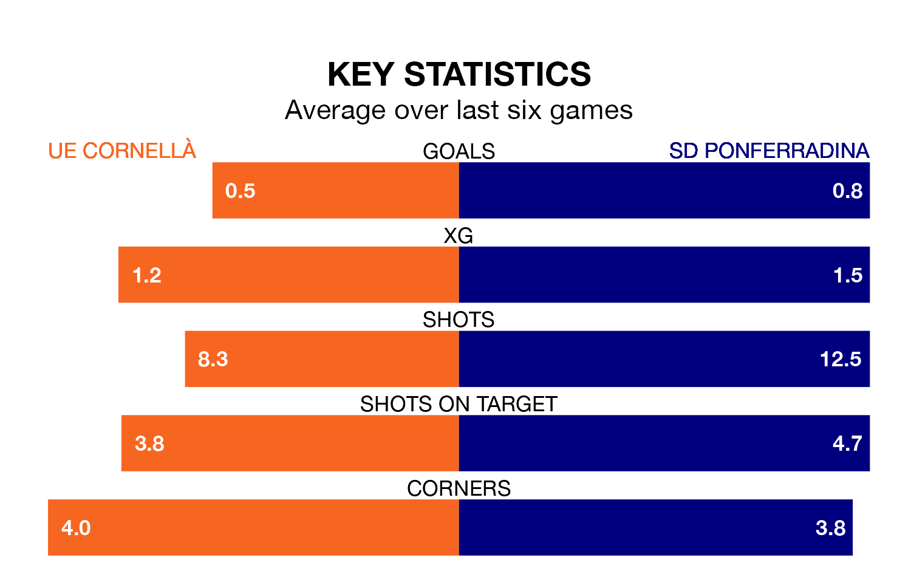

UE Cornellà are on a terrible run ahead of hosting SD Ponferradina at Campo Nuevo Municipal de Cornella on Sunday, with just one point collected from their last six games.
UE Cornellà have picked up just one draw in their last six Primera Division RFEF Group 1 games, and face a Ponferradina side whose last six games have brought two wins and one draw.
In Andrés Tomás Prieto Albert, Ponferradina can rely on one of the league's safest pair of hands. He has kept 12 clean sheets in his 25 appearances this season, and only one other 'keeper – Cultural y Deportiva Leonesa's Miguel Bañuz Antón – has been able to prevent the opposition scoring on more occasions in Primera Division RFEF Group 1.
In UE Cornellà's net, Rubén Miño Peralta has two clean sheets in eight games. He has conceded a goal every 120 minutes, 20% more often than the 150 minutes between goals for Prieto Albert.
The home team are 17th in the table after 34 games, of which they have won eight and drawn 11, earning 35 points.
The visitors are 12 places ahead of UE Cornellà in fifth, with 15 wins and 12 draws putting them on 57 points.
With 28 goals in 34 games so far this season, UE Cornellà are scoring at below the league average rate with 0.8 goals per game. And they are conceding at an average rate, letting in 36 goals at a rate of 1.1 per game.
Ponferradina are also below average scorers, with 1.0 goal per game, compared to a league average of 1.1. They have conceded 0.7 goals per game.
UE Cornellà's last match was on April 27, a 1-1 draw against Sestao River Club, with Álex González Piera getting the goal for UE Cornellà.
Ponferradina lost 3-1 against Barcelona B last time out, also on April 27, with Kevin Sibille on the scoresheet.
Updated: 12:00 (UTC), 02/05/24